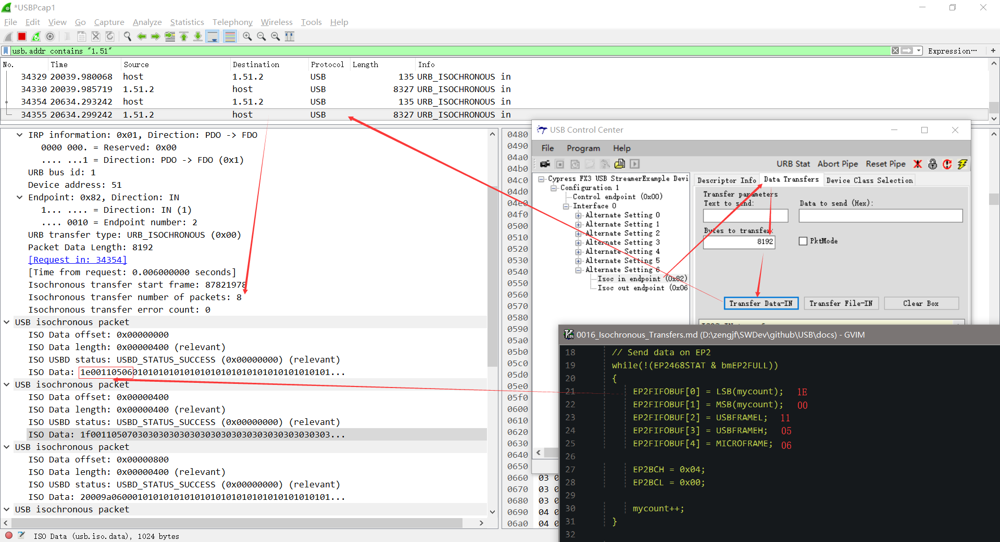
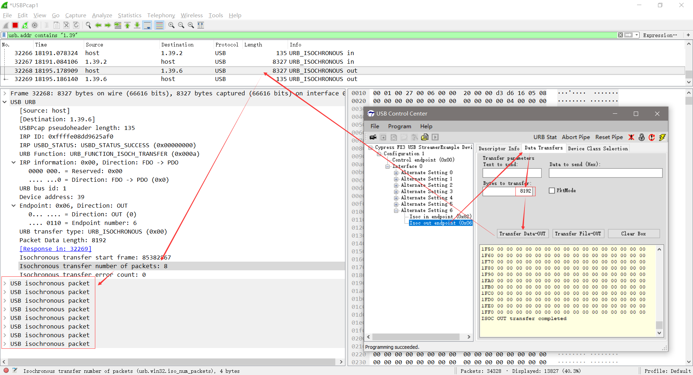

Isochronous Transfers
一步传输示例
参考文档
Isochronous Transfers:
An Isochronous pipe sends a new data packet in every frame, regardless of the success or failure of the last packet.
A special packet is the Start-of-Frame packet (SOF) that splits the USB bus into time segments. Each pipe is allocated a slot in each frame. The Start-of-Frame packet is sent every 1ms on full speed links. At high speed, the 1ms frame is divided into 8 microframes of 125μs each. A Start-of-Frame packet is sent at the beginning of each microframe using the same frame number. The frame number increments every 1ms.
Isochronous IN
处理同步数据方法
[...省略] case Alt6_IsocINOUT: { // Send data on EP2 while(!(EP2468STAT & bmEP2FULL)) { EP2FIFOBUF[0] = LSB(mycount); EP2FIFOBUF[1] = MSB(mycount); EP2FIFOBUF[2] = USBFRAMEL; EP2FIFOBUF[3] = USBFRAMEH; EP2FIFOBUF[4] = MICROFRAME; EP2BCH = 0x04; EP2BCL = 0x00; mycount++; } // check EP6 EMPTY(busy) bit in EP2468STAT (SFR), core set's this bit when FIFO is empty if(!(EP2468STAT & bmEP6EMPTY)) { EP6BCL = 0x80; // re(arm) EP6OUT } } break; [...省略]
运行效果
目前不知道为什么端点缓冲区是1k Byte，但是发送的数据却至少要8k Byte的倍数，难道是因为至少用1ms来算？暂不追查原理。
StreamExample采用的是16k Byte的参数；
Isochronous OUT

Buffer Data
初始化端点2的4个buffer中的数据
void TD_Init(void) // Called once at startup
{
[...省略]
// Prepare data
for (i=1;i<5;i++)
{
EP2FIFOBUF[0] = LSB(mycount);
EP2FIFOBUF[1] = MSB(mycount);
EP2FIFOBUF[2] = USBFRAMEL;
EP2FIFOBUF[3] = USBFRAMEH;
EP2FIFOBUF[4] = MICROFRAME;
for (j=5;j<1024;j++)
{
EP2FIFOBUF[j] = i;
}
EP2BCH = 0x02;
EP2BCL = 0x00;
}
[...省略]
}